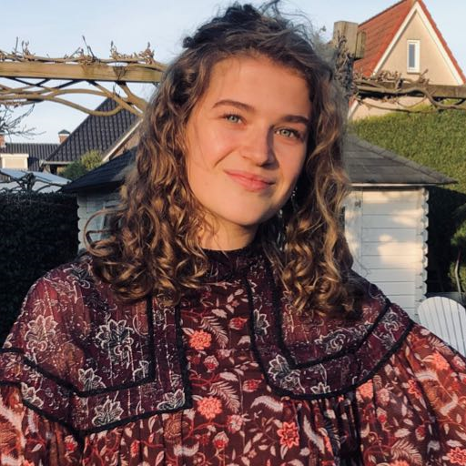

Who are we?
The COVID-19 pandemic of 2020 has had dramatic consequences for populations worldwide. We are students of the
Saxion University of Applied Sciences and have been tasked to research the efficacy of DIY mouth masks as well
as attempt to come up with reasonably safe designs that can be made at home by people with easily available materials.
This research was conducted by the following students:

Floor van der Holst
Fashion & Textile
Julia Kremers
Fashion & Textile
Ismael Mrad
Software Engineering
Karim Rabhi
Fashion & Textile
Zeynep Reis
Fashion & Textile